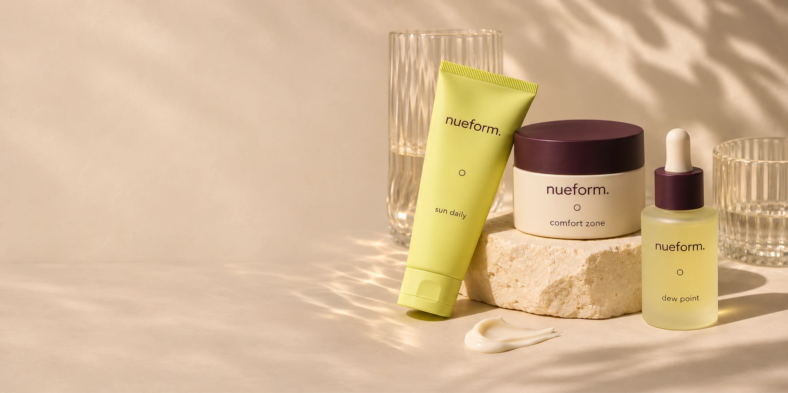

Good skin days.
Your own way.
No complicated rituals. Just considered skincare
that fits into the life you’re already living.
Small steps.
A softer kind of self-care.
A little order.
A lot of possibility.
Start with a step. Build a routine.
Leave room for what feels right.
Meet your new
daily company.
A fresh start?
Try another search or clear your filters.
Good things take their own time.
Find what fits yours.
Skin is skin.
Let it be yours.
Some days, it’s a whole ritual. Other days, it’s wash, moisturise, and out the door. We’re here for both.
nueform is a space for simple routines, thoughtful textures, and a relationship with your skin that feels a little less like work.
Start simple.
A few considered steps. Plenty of room to make them your own.
Stay curious.
Get to know the textures and ingredients on your shelf.
Find your rhythm.
Your routine should fit your day, and change when you do.
Your routine.
Three small steps.
Begin with the basics. Make a little time for you.
Three considered steps, one softer start.
A little care.
A little confidence.
A lot more you.
For the mornings, the late nights,
and everything beautifully in between.
A few good
questions.
Where should I start?+
Start with a cleanser, a moisturiser and your morning sunscreen. Our routine finder suggests a simple starting shelf based on your texture preferences. It does not diagnose skin conditions.
How do I choose a texture?+
Prefer a lighter feel? Explore gels and fluids. Prefer something richer? Try creams and balms. Open any product for its texture, size and ingredient overview.
Can I save products for later?+
Tap the heart on a product to save it on this device. Use the heart in the header to return to your saved shelf.
What about sensitive skin?+
Individual skin needs vary. Check the complete ingredient list on the final product packaging and patch test as directed. Speak with a qualified professional about specific skin concerns.